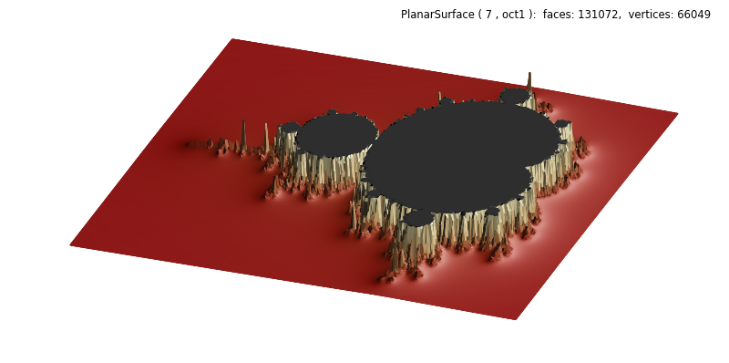

Datagrid Alternative to Image Construction¶
This example demonstrates a 3D alternative to viewing data intended for constructing a 2D image. The example uses code directly from a Matplotlib rendering example, as commented in the script. The resolution of the 3D surface is less than a tenth of the Matplotlib example image.

# +----------------------------------------------------------------------------
# | The following code between the ========= comments was copied DIRECTLY from
# | https://matplotlib.org/3.1.0/gallery/showcase/mandelbrot.html#sphx-glr-gallery-showcase-mandelbrot-py
# |
# +----------------------------------------------------------------------------
# ===================================================== start of copy.
import numpy as np
def mandelbrot_set(xmin, xmax, ymin, ymax, xn, yn, maxiter, horizon=2.0):
X = np.linspace(xmin, xmax, xn).astype(np.float32)
Y = np.linspace(ymin, ymax, yn).astype(np.float32)
C = X + Y[:, None] * 1j
N = np.zeros_like(C, dtype=int)
Z = np.zeros_like(C)
for n in range(maxiter):
I = abs(Z) < horizon
N[I] = n
Z[I] = Z[I]**2 + C[I]
N[N == maxiter-1] = 0
return Z, N
if __name__ == '__main__':
import time
import matplotlib
from matplotlib import colors
import matplotlib.pyplot as plt
xmin, xmax, xn = -2.25, +0.75, 3000 // 2
ymin, ymax, yn = -1.25, +1.25, 2500 // 2
maxiter = 200
horizon = 2.0 ** 40
log_horizon = np.log2(np.log(horizon))
Z, N = mandelbrot_set(xmin, xmax, ymin, ymax, xn, yn, maxiter, horizon)
# Normalized recount as explained in:
# https://linas.org/art-gallery/escape/smooth.html
# https://www.ibm.com/developerworks/community/blogs/jfp/entry/My_Christmas_Gift
# This line will generate warnings for null values but it is faster to
# process them afterwards using the nan_to_num
with np.errstate(invalid='ignore'):
M = np.nan_to_num(N + 1 - np.log2(np.log(abs(Z))) + log_horizon)
# ===================================================== end of copy.
from matplotlib import cm
from matplotlib.colors import ListedColormap
import s3dlib.surface as s3d
import s3dlib.cmap_utilities as cmu
# 1. Define functions to examine ....................................
pNorm = lambda x,n : np.power(x,n)
amax =np.amax(M)
M = np.where(M<0.1, 1, M/amax)
datagrid = pNorm(M,0.2)
def clipZ(xyz) :
x,y,z = xyz
return x,y,np.clip(z,0,1)
# 2. Setup and map surfaces .........................................
blacktop = cmu.hsv_cmap_gradient('darkred','lemonchiffon')
blacktop = blacktop(np.linspace(0, 1, 256))
blacktop[-2:] = np.array( [0,0,0,1] )
blacktop = ListedColormap(blacktop)
rez=7
surface = s3d.PlanarSurface(rez, basetype='oct1', cmap=blacktop)
surface.map_geom_from_datagrid( datagrid )
surface.map_geom_from_op(clipZ)
surface.map_cmap_from_op(lambda xyz: xyz[2]).shade().hilite(.6,focus=.5)
# 3. Construct figure, add surface, plot ............................
fig = plt.figure(figsize=(8,4))
fig.text(0.975,0.975,str(surface), ha='right', va='top',
fontsize='smaller', multialignment='right')
ax = plt.axes(projection='3d')
ax.set(xlim=(-.8,0.8), ylim=(-.8,0.8), zlim=(0,.8) )
ax.set_axis_off()
ax.set_proj_type('ortho')
ax.view_init(elev=75, azim=-70)
ax.add_collection3d(surface)
fig.tight_layout()
plt.show()